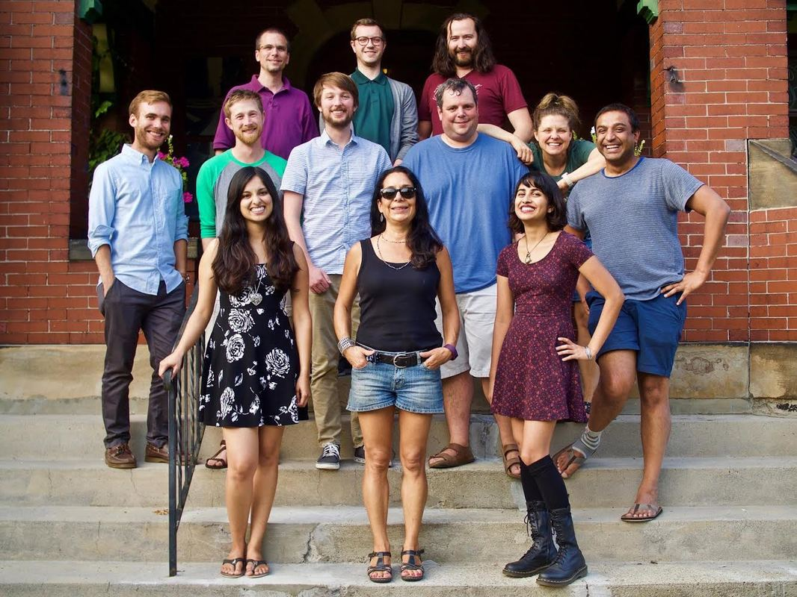
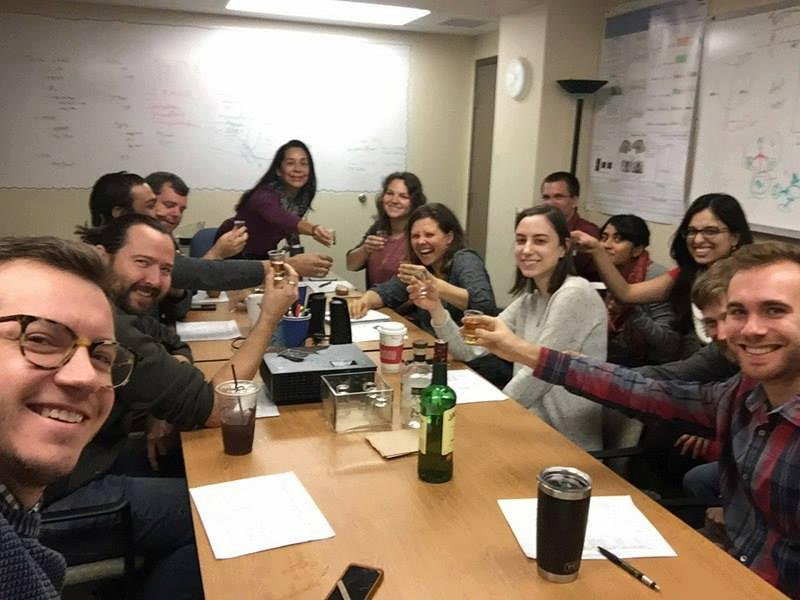

|
By Shruti Vij Professor Bea Luna “I have always loved the idea of not being what people expect me to be!” - Dita Von Teese. --- See Bea Luna's keynote OHBM2018 lecture here: https://www.pathlms.com/ohbm/courses/8246/sections/12540/video_presentations/115831 --- There isn’t another stalwart in neuroscience that this quote is better suited to describe. Be it her expertise in developmental cognitive neuroscience, her championing of novel techniques such as concurrent PET-MR scanning, her vocal demeanor or her punk rock persona! Bea Luna’s research persona lends an overwhelming sense of success in being not only innovative but also purposeful in her dogged pursuit of making one of the toughest periods in life - adolescence - better understood. She has to her credit hundreds of articles and many prestigious grants and awards, in addition to being the President of FLUX Society. With such lofty achievements, one might expect her to be a sombre intellectual but one is easily surprised by her bubbly and inviting personality! This article probably does not reflect my personal excitement at being able to interview such an amazing role model and to have so many take-aways from our conversation was definitely a bonus! What’s more, as you read on, you will discover that to be you in your own way is what leads you to success! Something that the world of academics needs to stop and think about while being in the rush to achieve the next big thing! Shruti Vij (SV): The research focus of your lab at Pittsburgh is neurocognitive development. In particular, you are interested in brain maturation in adolescence. What motivated you to pursue this direction? Bea Luna (BL): I was a crazy risk-taking teenager having fun and questioning everything, which probably contributed to being kicked out of school! But I remember being very aware that this was a really unique time of feeling free and invincible and that it was finite. I was very much into philosophy – thinking about what the mind means, what the brain means. It was during this time that I found out brain function could be measured with PET, and would fantasize about one day being able to use this to understand human consciousness. As a grad student, I studied visual and attentional development longitudinally in premature infants who, due to their immature lungs, can have hypoxic ischaemic events in the brain. I was surprised and fascinated that it didn’t matter if half the brain was missing, or if there was a little dot of hypoxic ischaemia, it did not predict outcome in visual acuity and attentional processes. I thought, wow, how can that be? In adults it would be obvious what the outcome was likely to be. You could also think about diaschisis – where a small region could be injured but it compromises its connectivity to a whole bunch of other regions. So it became clear that what mattered, especially with regards to development, was the integrity of the functional brain, beyond structure, what the brain does with what it has as it is specializing. fMRI was just emerging and I was fascinated with the possibility of using this approach to look at development, which I concluded in my dissertation. However, I was discouraged from the ability to use it in pediatric populations, and I thought, ‘oh yeah, watch me’. I did my postdoc in the Psychiatry department with John Sweeney where he saw that my developmental expertise could help us probe the prevalent theories that mental illness emerged in adolescence and neurobiological maturation could hold important clues. This was a perfect fit between my interest in developmental plasticity and brain functional integrity. From then on I just didn’t stop. SV: And the field of cognitive neuroscience is thankful for that! What are some key questions that you think are going to be the big drivers in developmental cognitive neuroscience in the coming years and how is your research contributing to these questions? BL: We are developing as a field ourselves. There has been great advances in mapping the regions and networks that show changes with age and their links to specific components of cognition. One of the areas that I have been a spokesperson about is the need to now understand the neural mechanisms underlying the developmental changes that we see with neuroimaging. Seeing pretty brain pictures is no longer enough. We need to speak to our colleagues that use animal models, those who are doing post-mortem work to build comprehensive models of development. This is how we can take the next step and make our work translational. For example, we have an amazing project, that I’ll be talking about in my keynote, where we use a molecular MR machine that acquires MR and PET simultaneously. It’s very hypothesis driven and it considers different lines of evidence that suggests hyper-processing of the dopamine system in adolescence. Intuitively this makes sense but it’s very complex. I’ve literally stood up in front of big audiences and said “Hi I’m Bea Luna. I’m a developmental cognitive neuroscientist and I have overgeneralized the concept of dopamine function.” It’s a very complex system with pre- and post-synaptic processes and multiple types of receptors, all who could have their own developmental trajectory. This is one of the ways that we are trying to understand mechanisms. I’ll also be talking about tissue iron as a proxy of dopamine. It’s difficult (though not impossible) to get testing pediatric populations with PET through the IRB so we’re finding this proxy for dopamine processing with MR-derived tissue iron. We are finding striking associations with tissue iron and PET markers of dopamine processing and how these are changing with age. You can see that talk for the punchline! I’ll also be mentioning a future direction with a new project that’s just started where we’re using spectroscopy at 7T using very complex acquisitions to look at changes in GABA and glutamate and the tissue iron proxy for dopamine. These three neurotransmitters are essential to understand plasticity. Animal models show molecular evidence for critical period opening and closing through puberty in association cortices, which motivates this new approach to understand critical period (vs. sensitive period) plasticity in association cortices in humans in vivo during adolescence. I find this tremendously exciting! I come up with these crazy questions that compel me to probe them regardless of the complex technology it may require. Was I a PET expert? No. But I really want to understand what’s going on with dopamine. So, I go to my colleagues and say ‘elucidate me, tell me about how to use PET to answer my questions.’ It’s the same with MRS: ‘tell me how I can use this technology in the best way possible to answer my mechanistic questions’. I say, ‘come play with us’ and let’s use this fancy approach to answer some very cool questions. This is how we end up collaborating with people in other departments at Pitt and with other Universities such as MGH, and start discussions with Columbia and Stoney Brook to use new approaches. We also have some even newer projects looking at single-cell work in monkeys to further understand the actual neural basis of cognitive development. SV: What do you think are the novel technological advances that will assist in uncovering brain maturation? BL: Certainly PET/MR and MRSI have reached a level that can be applied to developmental questions. But there are tremendous advances in the analyses area including computational modelling, machine learning, and advanced statistics that can push the envelope as to what we can answer. We have been bringing that into the fore to make sense of these molecular mechanisms but also advancing what we can do with longitudinal neuroimaging data, resting state fMRI, and how to become informed by reinforcement learning. Resting state in particular is critically advancing in how we can control for head motion, a huge problem in developmental studies. Diffusion-weighted imaging has now advanced to a level that allows us to apply not just tensor models, but orientation approaches that afford us greater insight into the maturation of white matter connectivity making inferences beyond just myelination. For example, we know that glia dynamically influences myelination. Let’s not forget about the importance of behavioral assessments, which at the end of the day, we need to merge with our brain data to assess its relevance. Finally, Big Data approaches have had a huge impact in the power we now have to answer questions. We share our data as well as use other’s Big Data to replicate our findings. In sum, multimodal approaches to inform mechanisms, advanced analyses, and big data is where the field is showing great advancement. SV: In today’s discussion on diversity and inclusion, what are your thoughts and how do you address these issues in your lab? BL: First, I’ll tell you what my soapbox is. I was in the advisory council for the director of the NIH – this was in 2012. They’d just started to really speak about diversity. I was different to other minorities in the council. Understandably, they wanted to see enhancement and so on, but I thought ‘no, I don’t need your help because I’m a woman or I’m Hispanic. When I give a talk at SFN or OHBM I don’t want people to think ‘oh my god, look at the woman talking – and she’s Hispanic too.’ I said you know what Francis, white men have done a great job, and keep advancing things. That’s great, and we’re grateful – but I’m in a different place and am bringing insights that will never come to that closed club. So, actually, “you’re welcome!”. I’ve been in a lot of high level committees where I do feel in the minority, as a woman. I don’t blame the men, I have a husband, I have a son. I don’t think they mean ill – but I do notice that I have to prove myself, and it can take a while before I am finally listened to and my ideas be deemed critically helpful. White man are accepted much quicker. Again, I don’t think this is intentional at all and I get great satisfaction when I have won them over. I also don’t mind doing the extra work, it keeps me on my toes in science and keeps me humble. It is what it is, but I do see change. I see that men are really aware and trying to do better. Then again, my “dopamine” personality may be playing a role beyond typical diversity, ha ha.  Bea's lab at Pittsburgh SV: Your trainees speak very highly of you and the work environment that you have created in your lab. Is this purposeful? What are the things that you personally make an effort on to make things better and easier for your trainees? BL: First of all, awesome! I am careful about selecting smart people that will fit into our dynamic cool atmosphere. Some may think “party lab” but in fact we are more about working hard and pushing each other in a respectful but humorous manner. Everyone in my lab loves what they’re doing and I don’t have to look over their shoulders. They’re self-driven, and that really works. I give them their space and I’ve been really lucky. Every grad student I’ve had has been amazing. At the top of my list of favorite things is the one-on-one with my mentees. I talk to these young, super-brilliant people. They may not be familiar with these big questions that I have. So I have a discussion and there’s some theoretical aspects that take a while to understand – but I tell them not to worry. I’m planting seeds in their brain that will later grow. I tell them that they will deliberate and they will come up with the logical next step, which I am not interested in. Instead, I want to hear the other idea. I want to hear the one they’re embarrassed to tell me because it’s so outrageous, the one that makes you giggle. For me that’s great, because it’s usually in the context of bigger questions and leads to a bigger step forward. For them, it turns out that it grabs their passion, and then it’s their thing. They’re not following tightly in my footsteps. We go back-and-forth and think outside of the box with no limits. As a philosophy double major I loved to just boldly think beyond the obvious and now I can do this within my scientific questions with my brilliant students, who are so frikkin smart. But there’s a lot of laughter – sometimes too much! There are a lot of bonds made in the lab – we’ve even had marriages. They are all discussing new methods and approaches and I love hearing how they all interact and help one another just for the joy of collaborating. I am careful not to bring in difficult people so as not to mess with our cool vibe. SV: You are also the president of FLUX in addition to being an actively involved academic stalwart. How do you manage all this in the same 24 hours everyone gets? BL: great question – I want to deliver an important message here. I think I can work intensely for a concentrated amount of time – but I try not to get into the office before 9 as I like my thinking space in the early morning before i go to the lab. Granted I’ll typically work until 7 or 7.30, and on the weekends I really try do minimal work. I think that’s super important. You need that space, doing other things, seeing your friends. Some of my friends have no idea what neuroscience is, a lot of them are artists and I think that gives you space to make the connections. If you’re always looking at the trees you sometimes struggle to see the forest, the bigger questions. There are times when there are lots of deadlines, and it can be stressful. I’m in a medical school so you write grants, that’s what you do. Now I have an endowed chair so things are a bit easier but I always maintain a couple of R01s plus other collaborations and foundation grants. It used to be very stressful to know that you had to get a grant or sink. But for the last two grants, I thought enough, I’m going to love my the grant writing process. I now embrace and laugh at the innovative directions that I am willing to go. My first grants would take a couple of rounds to get funded with comments that the ideas were awesome but how could this be done, prove it! And we would! Now I have a track record and they get through more smoothly (knock on wood). I definitely never want to get a critique that everything is fine but “yawn”. When I have to write grants I get everyone involved and its a party with discussions going on everywhere and every white board filled with ideas and it’s intense and fun and we laugh a lot. I get home mentally exhausted but satisfied and my husband has a martini ready and feeds me. I don’t engage those who will be leaving the lab soon though since they will not be around, and I feel that they feel left out cause they want to play too.  Celebrating success in the Lab for Neurocognitive Development By the way Flux is not an acronym, although everyone always capitalizes it. I made a great effort to not have an acronym. I chose the word Flux to always remind developmental cognitive neuroscientists that we are studying a dynamic process and we need to capture what is in Flux. I am so proud of the Society and the amazing conference that Brad Schlaggar, Silvia Bunge, and Bruce McCandliss and I made. We dreamed this up at a conference when we were all postdocs drinking at a pier late at night toasting to how one day we would bring developmental cognitive neuroscience into its own! By the way, that was another of those moments when people were saying no way that is too hard don’t do it, I didn’t even wince. Now as developmental cognitive neuroscientists we have a home and we bring people in to help unite us in advancing the field from David van Essen, Steve Petersen, Russ Poldrack, Michael Posner, John Gabrieli and on and on. We have intense days of hardcore science and then… party hard ending with crazy, and i am not kidding, crazy karaoke and people sweating and dancing from students to bigwigs. The idea being to break the science class system and for students to see that we are all in it together and for them to start forming bonds with each other that will end up in collaborations for great science. SV: OHBM is largely made up of trainees at many different levels. They look up to people like you and would like your advice. What other advice would you like communicated to our large trainee audience? BL: Whenever I find myself providing advice for people – and I see this a lot where people have to make choices, such as what lab to go to, what job, what country etc - some things that I think nobody ever tells them is to consider the whole package, to not put their personal life at the end of the list. For example, leaving the person they love to pursue what they think is the only path to career success. If you’re passionate about your science, you can make it work in many places. I personally chose to be where my husband and I both loved. That said, pursue the questions that you are passionate about, don’t compromise on that because this work is hard and can be stressful. But if you’re pursuing the questions that you are passionate about then you can deal with the annoyances. If you’re just going to do things because they’re convenient or they’re going to look good, then it’s not going to make you happy. For me the secret of success is to do what you really want to do, not what you think you should be doing. Speaking of moving for work, I’m presently looking for postdocs, grad students, RAs to join the lab. If you’re into innovative thinking, great questions, and working with an awesome group doing new approaches then contact me, we’re actively looking for people. Feel free to contact me or my lab manager for further details! SV: Thanks again for taking the time to share these wonderful pearls of wisdom with our audience! We look forward to your keynote next month! The interview finished and as a trainee struggling to understand my personal growth within academia, I came away with a fresh look and a new mentor I felt I could seek out for advice! It also made me more confident that academics like Bea are what we are all fighting to be!
0 Comments
Your comment will be posted after it is approved.
Leave a Reply. |
BLOG HOME
Archives
October 2022
|
 RSS Feed
RSS Feed